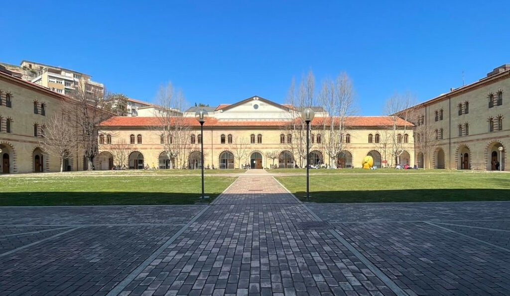
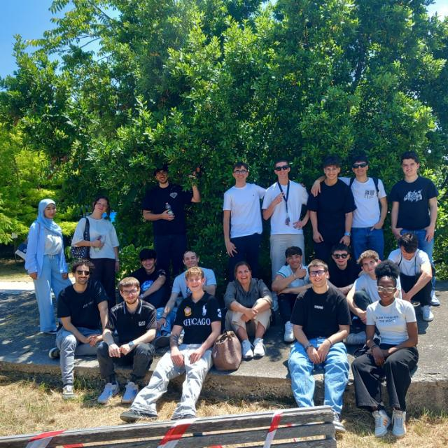

Chi sono
Presentazione
Ho 18 anni e vivo a Jesi. Sono una persona che, quando trova qualcosa che la stimola davvero, si mette sotto di testa e non molla finché non trova una soluzione. Non so se è una qualità o un difetto — forse tutte e due — ma è quello che mi ha portato, dalle scuole medie in poi, a scegliere l'informatica. Non tanto per una vocazione precisa, quanto per quella sensazione di capire come funzionano le cose: smontarle, rimontarle, migliorarle. Famiglia, amici di sempre e i compagni con cui ho condiviso questi cinque anni sono la parte che, di tutto, conta di più.
Il mio percorso di studi
Ho scelto il Marconi Pieralisi perché volevo una scuola che mi desse strumenti concreti, non solo teoria. E così è stato: nel triennio ho imparato a progettare basi di dati, a sviluppare applicazioni web, a configurare reti e a ragionare su come si costruisce un software in team. Ho lavorato con Git, con PHP, con Python, con Android Studio — spesso su progetti reali, a volte sbagliando e ricominciando da capo. Ho scoperto che mi piacciono particolarmente l'intelligenza artificiale, la cybersecurity e tutto ciò che sta dietro a un'infrastruttura di rete. Materie tecniche, sì, ma che richiedono anche metodo, logica e la capacità di comunicare quello che hai fatto.

Uno sguardo al futuro
Non ho ancora le idee del tutto chiare su cosa verrà dopo il diploma, e preferisco ammettere l'incertezza piuttosto che fingere una certezza che non ho. Ho guardato diverse facoltà e quella che mi ha incuriosito di più, al momento, è Economia all'Università Politecnica delle Marche di Ancona: mi affascina l'idea di unire la solidità tecnica che ho costruito qui al Marconi con una comprensione più ampia di come funzionano le organizzazioni e le imprese. Ma so già una cosa: voglio continuare a fare cose concrete, che abbiano un senso per le persone che le usano.

La classe
Cinque anni non si dimenticano, soprattutto se li hai passati con le persone giuste. La 5ª CM è stata una classe in cui ci siamo sempre sostenuti: tra risate, crisi, telefonate dell'ultimo momento, riunioni pomeridiane di studio e qualche momento di panico collettivo prima delle verifiche. Non è stata sempre facile, ma c'è sempre stata coesione — quella vera, non quella da vetrina. Ci tengo a ringraziare ognuno di loro per quello che ha messo in questi cinque anni. La oramai ex 5ª CM è una classe che porterò sempre nel cuore.
